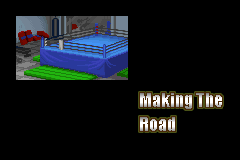
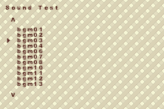

Gekitou Densetsu Noah - Dream Management (Japan)
Stateless / Passcode Debug Menu Patch 💾 MultiBoot 🎮 4P Link
Cartridge Identity
- Game Code
ANNJ(FamilyANN)- Header Title
GEKITOU NOAH- Maker / Revision
0P/ rev0- ROM Size
- 8.0 MiB (8,388,608 B)
- Save Media
None / Unknown- SHA-256
94233e3dddcdb1bbcd5c2fc23629ea5c778a7c1998c5a98b92ecef5a5bd232a5- Engine / SDK Group
comm-037(5 families)
Screenshots

Debug Menu Re-Enablement Patch (.ips)
Download ANNJ-debug.ips (17 B IPS / 4 B delta)
- Hook Mechanism
thumb_branch_override· Thumb branch at 0x08035c12 redirecting boot task initialization to Hudson Soft Sound Test developer menu (0x0803356C)- IPS SHA-256
9d6e695d1c4befd57490ad6603d48ac6ec3eb9370c81a8af3dbd5334792679ed
gbakit patch apply ANNJ-debug.ips original.gba patched-debug.gba

Link Cable & Multiplayer Communications
This title contains detected communication capabilities: 💾 MultiBoot 🎮 4P Link.
Detailed protocol specifications, SIO registers, Joybus commands, and MultiBoot sequences are documented in the Link & Multiplayer Reference.
- Multi-Player SIO (4P)
- 16-bit ring network · SIOCNT (
0x04000128) literals:0x003ae4,0x004058,0x01e3e8· SIODATA32/SIOMULTI0 (0x04000120) literals:0x069f58 - Single-Cart MultiBoot
- Single-Cartridge MultiBoot (Download Play) client/server handler · Thumb SWI 0x25 (
0xDF25):0x0b3fe0,0x0f5e72,0x13b7c0,0x248096
Cartridge Storage Architecture: Stateless / Passcode
Zero non-volatile battery hardware: This cartridge PCB contains ROM only (no SRAM, Flash, or EEPROM chips). Progression is preserved via on-screen passcodes or session-only gameplay. No
.sav file is generated or required.
ROM Assets, Compression & Audio
- BIOS Compression
- LZ77 (
0x10): 4,637 streams · RLE (0x30): 0 streams - ROM Pointer Tables
- 199 tables (106 pointing to validated compressed streams)
- SDK Backup Tags
EEPROM_V122
Text, Fonts & Scene Data
- Primary Text Encoding
- LZ77-compressed ASCII (
1ASCII strings ·200Shift-JIS runs ·5LZ77 ASCII blocks) - Font & VWF Indicators
- No VWF Table 1bpp Font · BIOS SWIs: BitUnPack
0x10:42· LZ770x11/12:49· Huffman0x13:8· RLE0x14/15:14 - Scene & Packaging
132ROM pointer tables (≥32 entries,3≥200) ·1relativeu32TOCs ·367OAM metasprite hits
Password System
- Save Media
- Battery-Backed (EEPROM)
- Password Class
- Password UI Strings Detected (
password_ui_strings_only)
Hardware MMIO Subsystems
ppu_display0x802c638